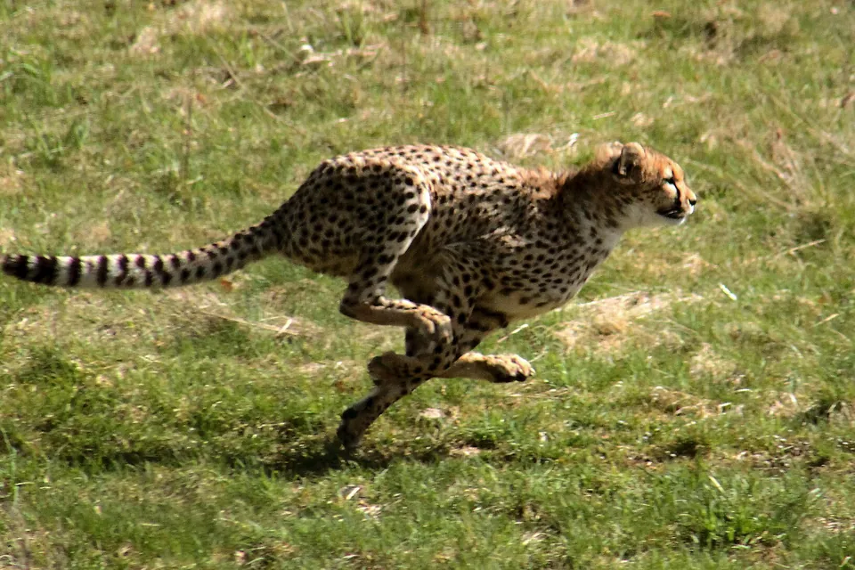

Home › Blog › How fast is a cheetah?
How fast is a cheetah? 93 km/h in the wild, 29 m/s on a straight run
The fastest speed measured in wild hunting cheetahs is 25.9 metres per second, about 93 km/h or 58 mph, from GPS collars on five cheetahs in Botswana. A straight line timing of one captive cheetah reached 29 m/s, nearly 105 km/h, and that is the class of figure the IUCN Cat Specialist Group still prints. Most wild hunts never get close to either number. Sources below were opened on 20 November 2026.

The numbers at a glance
Two different records get mixed together in popular accounts. One is a wild hunt. The other is a straight run by a captive cheetah. They are not the same measurement.
| What was measured | Figure | Source |
|---|---|---|
| Fastest wild hunting run, five collared cheetahs, 367 runs, northern Botswana | 25.9 m/s, about 93 km/h (58 mph) | Wilson et al. 2013, Nature, as reported by Scientific American |
| The other four cheetahs in that study, each animal's best | 25.4, 22.0, 21.1 and 20.1 m/s | Same report of the Nature study |
| Average top speed of a run in that study | 14.9 m/s, about 54 km/h | Same report |
| Straight line timing, one captive cheetah | 29 m/s, nearly 105 km/h | Sharp 1997, Journal of Zoology, cited by Scientific American and by Shield et al. 2023 |
| IUCN Cat Specialist Group species page | Strides up to 7 m, and speeds up to 29 m/s | catsg.org, opened 20 Nov 2026 |
| Separate wild collar study, six cheetahs, Kgalagadi | Peak 18.94 m/s (about 68 km/h); longest run 59 s; longest stretch above 13.9 m/s covered 379 m | J. W. Wilson et al. 2013, Biology Letters |
Checked 20 November 2026. The Cat Specialist Group page no longer prints "up to about 103 km/h" or a 300 m chase limit. The 29 m/s line matches the straight line record, not the Botswana hunting peak.
How the wild 93 km/h was measured
Older top speed figures came mostly from a handful of timed runs, often by captive cheetahs chasing a lure on a straight track. Sharp's 1997 note in the Journal of Zoology is the one Scientific American cites for 29 m/s, nearly 105 km/h. A 2023 review in the Journal of Experimental Biology by Shield, Muramatsu, Da Silva and Patel calls that timed run the first reliably measured confirmation, and describes the animal as a rewilded cheetah. Nobody had shown that wild cheetahs, hunting real prey, reached the same speed.
In 2013 a team led by Alan Wilson at the Royal Veterinary College, working with the Botswana Predator Conservation Trust, published collar measurements of wild hunts in the Okavango. Scientific American's report of that Nature paper, which we reopened on 20 November 2026, gives the detail the abstract summarises: five cheetahs, 17 months, 367 runs. The five individual bests were 25.9, 25.4, 22.0, 21.1 and 20.1 m/s. Only one run hit 25.9 m/s, about 93 km/h or 58 mph. The average top speed of a run was 14.9 m/s, about 54 km/h. The famous number is one animal's best, not a typical hunt.
A second wild study never got near 93 km/h
The same year, a different group (John W. Wilson, Michael Mills and colleagues, not Alan Wilson's Royal Veterinary College team) collared six free ranging cheetahs in Kgalagadi Transfrontier Park. Their Biology Letters paper, which we read in full on PMC on 20 November 2026, recorded a fastest speed of 18.94 m/s, about 68 km/h, and a fastest GPS acceleration of 7.5 m/s². The mean of the greatest speeds in the six GPS tracked hunts was 12.90 m/s. Prey in the observed chases included steenbok, springbok and an ostrich chick, not the impala of the Okavango study.
That paper also gives the chase lengths that collar data can actually support. Every chase was brief. The longest run lasted 59 seconds. The longest stretch of continuous running above 13.9 m/s lasted 23 seconds and covered 379 m. Those are measured runs in one park, not a species wide rule that chases "seldom" pass 300 m. We no longer attribute a 300 m limit to the Cat Specialist Group, because the species page opened on 20 November 2026 does not state one.
If not top speed, what wins the hunt?
The Botswana collars recorded some of the highest values measured in a land mammal for acceleration, deceleration and turning. Scientific American's report of the study gives acceleration power of up to 120 watts per kilogram of body mass, about double that of the fastest racing greyhounds. The Kgalagadi paper cites that same 120 W/kg figure from the Nature study and argues that turns cost extra energy the forward speed figure leaves out. In the Kgalagadi hunts, speed was not what separated success from failure. Angular velocity in the last 5 seconds was higher when the hunt succeeded.
The Botswana cheetahs mostly hunted impala in fairly thick vegetation, so braking and sharp turns mattered more than a straight sprint. Wilson told the Nature news piece that sprinting is only part of the story. The authors suggested cheetahs chasing fast gazelles on open East African plains may use higher speeds. That suggestion is still a suggestion: the open plains measurement has not replaced the Okavango numbers.
Check another hunting style
Cheetahs win short daytime chases. Lions hunt in a group and usually at much lower speed. The tear marks and the heat question are the other two cheetah pages readers open next.
What makes a cheetah so fast?
The Cat Specialist Group's species page, opened 20 November 2026, still lists the same body plan, now tied to the 29 m/s straight line class of speed rather than to a 103 km/h chase:
- Flexible spine, long legs and large thigh muscles on a light frame of 23 to 65 kg. The group says this build allows strides up to 7 m.
- Semi retractable claws that stay partly out and grip when the cat accelerates and turns.
- A long tail, about half the head and body length, used for balance in turns.
- Large lungs, heart and nasal passages, and smaller canine roots, which leave room for a larger nasal opening. The group notes that the extra air intake matters while the cheetah holds a throttling bite after the sprint.
Spot pattern and the black tear marks are identification, not a speed measurement. See why cheetahs have black tear marks.
How long can a cheetah keep it up?
Not long, but the limit is not the old "300 metre" line. The two collar studies above measured short runs: a 59 second maximum in the Kgalagadi, and a 379 m stretch at the higher speeds there, against 367 Botswana runs whose average top speed was only 14.9 m/s. A common explanation used to be that cheetahs quit because they overheat. Hetem and colleagues measured body temperature in free living cheetahs and found it did not rise enough during hunts to explain stopping, and that it rose more after a successful hunt than during the chase. They concluded that cheetahs do not abandon hunts because they overheat. The more likely limit is the muscle cost of each sprint, including the turns. Our deeper dive is do cheetahs abandon hunts because they overheat?
After a chase a cheetah usually needs to rest and recover its breath before eating, and this is when lions and spotted hyenas may steal its kill. How cheetahs live with those larger carnivores is covered in how cheetahs live alongside lions and hyenas.
Is the cheetah really the fastest land animal?
Yes, on the measurements that have been published. No other land animal has a reliable sprint faster than these. The Nature paper's own summary notes that racing greyhounds reach about 18 m/s, below even the Kgalagadi peak of 18.94 m/s and well below the Botswana best of 25.9 m/s. The 29 m/s straight line record is faster again, and it is a captive timing, not a hunt. Shield and colleagues' 2023 review still treats the Wilson collar study as the landmark record of wild hunting, and it does not cite a later wild run that beat 25.9 m/s.
Key takeaways
- Best measured wild hunting speed: 25.9 m/s, about 93 km/h, one run among 367 in Botswana. The average run topped out at 14.9 m/s.
- The 29 m/s figure is a straight line timing of a captive cheetah (Sharp 1997). The Cat Specialist Group page checked on 20 November 2026 says "up to 29 m/s", not 103 km/h, and it does not give a chase length.
- A second wild study, in the Kgalagadi, peaked at 18.94 m/s. Its longest fast stretch covered 379 m.
- Overheating is not why cheetahs stop, according to direct temperature measurements (Hetem et al. 2013).
More on the species in our cheetah facts page, and the behavior hub.
Cite this page
APA: BigCatWise. (2026, November 20). How fast is a cheetah?. https://bigcatwise.com/blog/how-fast-is-a-cheetah.html
MLA: "How fast is a cheetah?." BigCatWise, 20 Nov. 2026, bigcatwise.com/blog/how-fast-is-a-cheetah.html.
Chicago: BigCatWise. "How fast is a cheetah?." Last modified November 20, 2026. https://bigcatwise.com/blog/how-fast-is-a-cheetah.html.
Please check the date you accessed the page and adjust to your teacher's or journal's style guide.
Sources
- Wilson et al. (2013) Locomotion dynamics of hunting in wild cheetahs, Nature 498
- Kaplan, Scientific American / Nature (13 June 2013) Speed test devised for wild cheetahs
- Sharp (1997) Timed running speed of a cheetah (Acinonyx jubatus), Journal of Zoology 241: 493-494. DOI 10.1111/j.1469-7998.1997.tb04840.x
- Shield, Muramatsu, Da Silva and Patel (2023) Chasing the cheetah: how field biomechanics has evolved to keep up with the fastest land animal, Journal of Experimental Biology 226: jeb245122. DOI 10.1242/jeb.245122
- Wilson, Mills, Wilson, Peters, Mills, Speakman, Durant, Bennett, Marks and Scantlebury (2013) Cheetahs balance turn capacity with pace when chasing prey, Biology Letters 9: 20130620. DOI 10.1098/rsbl.2013.0620
- Hetem et al. (2013) Cheetah do not abandon hunts because they overheat, Biology Letters
- IUCN SSC Cat Specialist Group: Cheetah
- Smithsonian's National Zoo and Conservation Biology Institute: Cheetah
Figures are rounded summaries of the sources above. Wild populations are hard to count, so estimates change as new surveys are published.